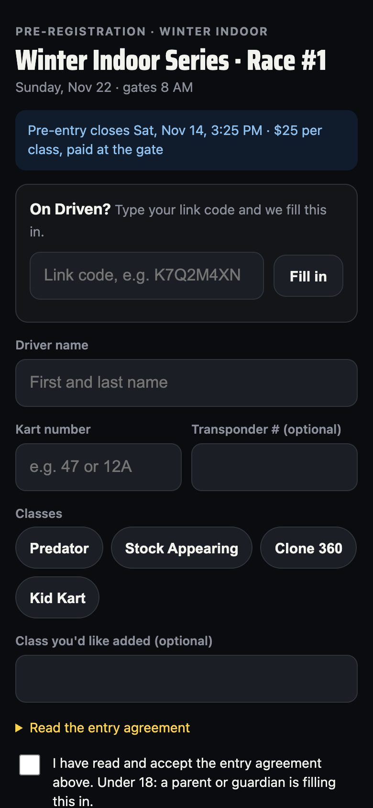
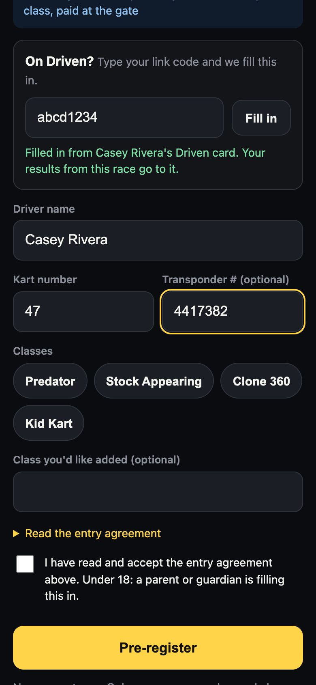
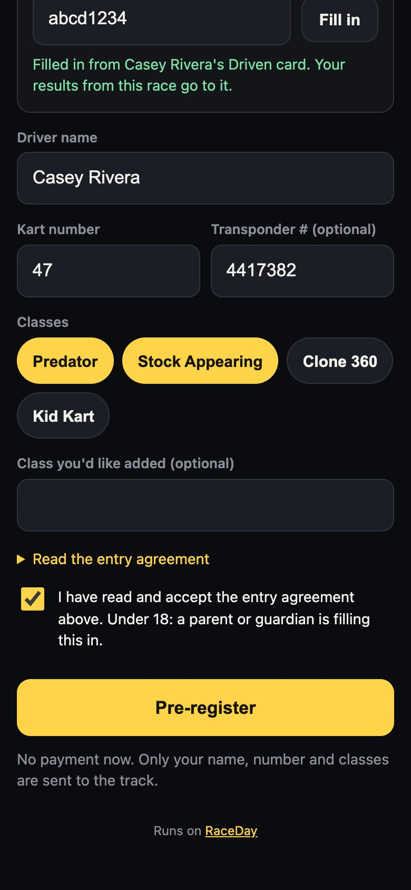
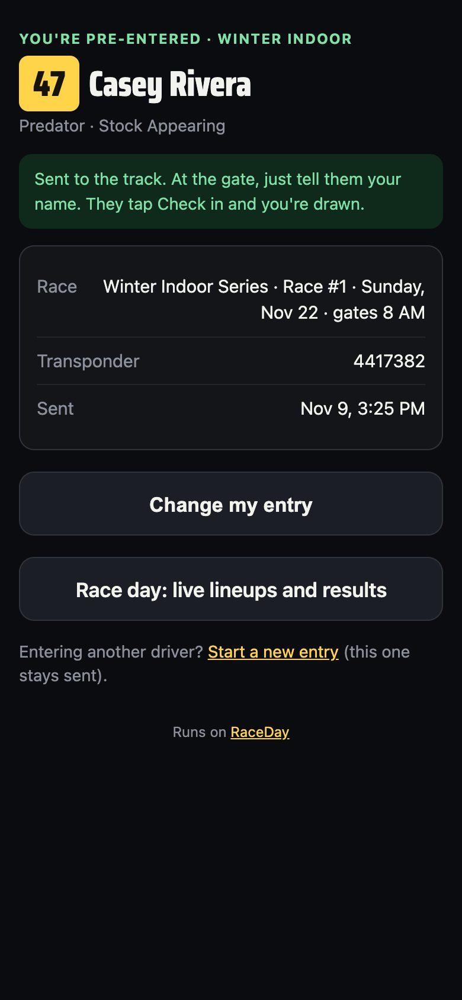

-
Open the track's link
Tap the entry link the track posted, or scan their QR code. You'll see the race, the date, when entries close and any note from the track, like the entry fee.

The entry page -
On Driven? Fill it in
Type your link code under On Driven? and tap Fill in. Your name and number fill in, and your results from this race go to your card. No Driven card? Just type your name and kart number. If the track asks, add your transponder number.

Filled in from Driven -
Pick your classes and accept
Tap each class you're racing. If your class isn't listed, type it under Class you'd like added. Open Read the entry agreement, tick the box, and tap Pre-register. Under 18? A parent or guardian fills this in.

Classes and agreement -
You're pre-entered
You'll see your number, name and classes. This page stays on your phone, so open the link again any time to see it. On race day, Race day: live lineups and results shows your heats and finishes live.

Your confirmation -
Need to change something?
Open the link again and tap Change my entry. Your new entry replaces the old one. Entering a second driver, like a brother or sister? Tap Start a new entry. The first one stays sent.
-
Race day: tell the gate your name
The track already has your entry. Tell them your name, they tap Check in, and you draw your pill. Pay any entry fee the way the track says.
Good to know
- The entry page never asks for your email, phone or address.
- Only the track can see the entry list.
- No Driven card yet? Make one free at victoryraceday.com/driven and give the gate your link code. Your results then follow you to every RaceDay track.
Next guides
Still stuck? The Driver FAQ covers common questions, and the Field Manual walks through every Driven screen. Or just text me — it's the fastest way to get an answer.
💬 Text Josh · (260) 207-4983 →or email